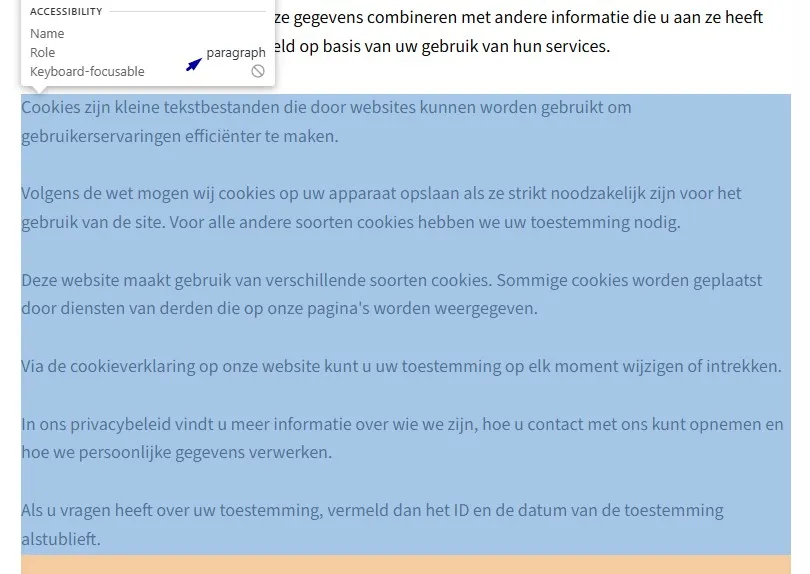
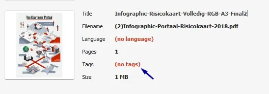
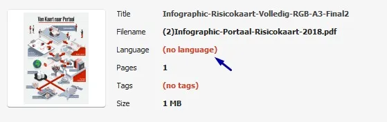
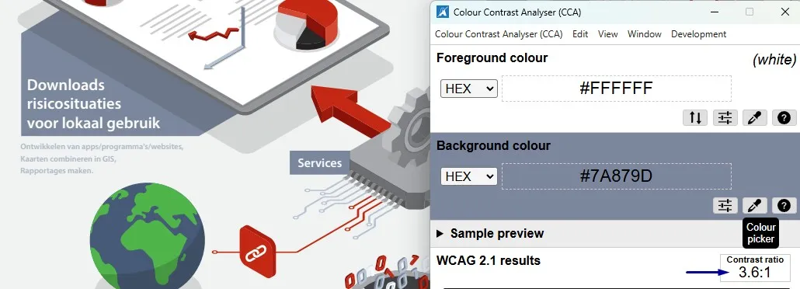
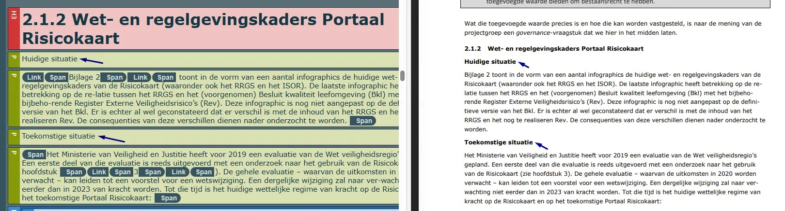
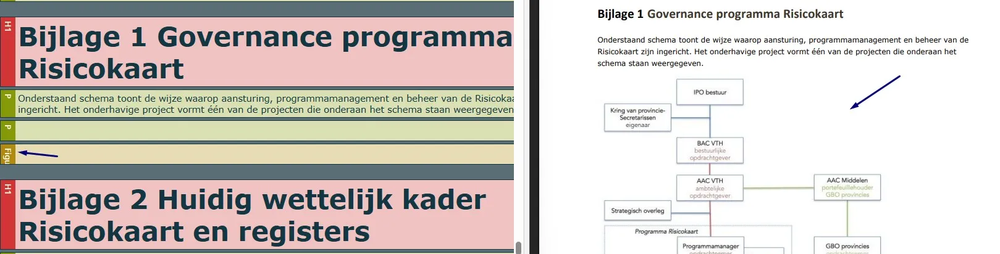
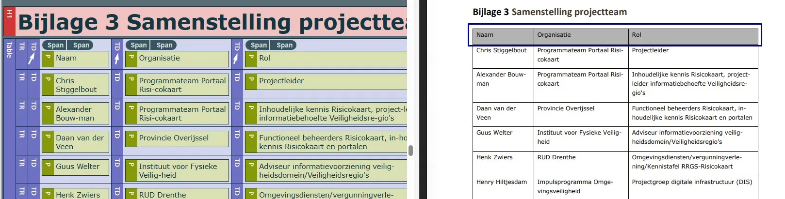
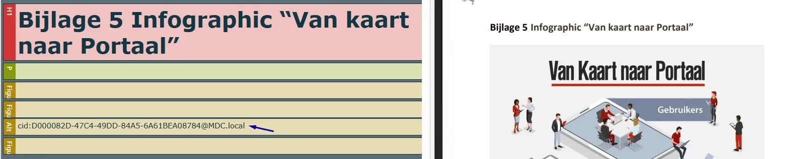
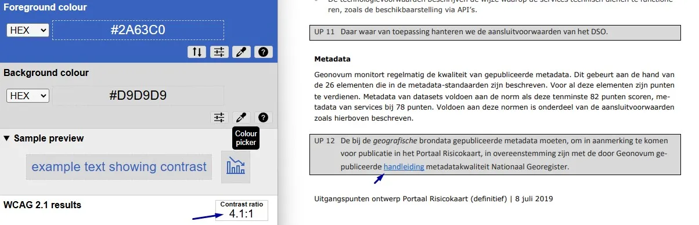

Content-audit digitale toegankelijkheid van website risicokaart.nl
Samenvatting
Wij hebben de content op de website risicokaart.nl onderzocht tussen 1 en 12 juni 2026. Op dit moment is een deel van de succescriteria als voldoende beoordeeld. In dit rapport lees je welke punten nog verbetering behoeven en hoe deze kunnen worden aangepakt.
Gebruik dit rapport samen met de audit van de hoofdwebsite ipo.nl. De website van deze contentaudit is een technische kopie van ipo.nl. Een aantal technische problemen die niet op de hoofdwebsite voorkomen, staan wel in deze contentaudit beschreven.
Het logo bovenaan de website toont de volledige tekst "Risicokaart.nl", maar de alt-tekst is leeg. De toegankelijke naam van de link waarin het logo staat, is "Homepagina".
User story
Ik lees de website met een schermlezer. Als ik naar het logo navigeer, hoor ik niet de volledige naam van de organisatie. Ik verwacht dat de tekst die ik hoor overeenkomt met wat er in het logo staat.
Ik bedien de website met spraakinvoer. Als ik de logolink activeer door de zichtbare tekst uit te spreken, reageert de website niet. Ik verwacht dat ik een link kan activeren door de tekst te zeggen die ik zie.
Hoe te testen
Vergelijk voor elk element met een zichtbaar tekstlabel die tekst met de toegankelijke naam (via het accessibility-panel in DevTools of een schermlezer). De zichtbare tekst hoort aan het begin van de toegankelijke naam te staan. Test met spraakbesturing: "klik op [zichtbare tekst]".
Oplossing
Zorg dat het tekstalternatief (alt-tekst) van het logo de volledige tekst bevat die in het logo zichtbaar is, namelijk "Risicokaart.nl". Verwijder daarbij het <span class="screen-reader-text">Homepagina</span>-element.
Op deze pagina zijn de teksten "Veelgestelde vragen", "Contact" en "Andere relevante websites" geen koppen, maar zijn ze ten onrechte gemarkeerd met h3-elementen om de lettergrootte te vergroten. Inhoudelijk zijn het geen koppen, omdat er geen onderliggende inhoud op volgt. Kop-elementen zijn bedoeld om de informatie op een pagina te structureren. Schermlezergebruikers vertrouwen op koppen om door de pagina te navigeren en de structuur te begrijpen. Kop-elementen zijn dus niet alleen bedoeld voor visuele opmaak.
Ik lees de website met een schermlezer. Als ik door de koppen navigeer, kom ik een kop tegen die geen nieuwe sectie introduceert. Ik verwacht dat elke kop het begin van nieuwe inhoud aangeeft.
Hoe te testen
Gebruik deze tool om de koppen op je webpagina te controleren: Koppen checker. Staat een kop niet in de lijst die deze tool teruggeeft? Dan is het niet als koptekst gemarkeerd. Visuele koppen moeten in de HTML staan, niet alleen als gestylede tekst.
Oplossing
Verwijder het <h3>-element en gebruik een ander passend element, zoals een <p>-element. De gewenste visuele stijl kan vervolgens met CSS worden toegepast. Je kunt het ook oplossen door content onder deze koppen toe te voegen.
#3 - Koptekst van onvoldoende kwaliteit
Impact: MediumType: ContentWCAG: 2.4.6EN: 9.2.4.6
Op deze pagina staat een kop "Ga direct naar" die niet voldoende beschrijft welke inhoud erop volgt. Koppen als "Snel naar", "Direct naar" en "Ga naar" zijn te algemeen en geven geen betekenisvolle informatie over het doel van de inhoud. Schermlezergebruikers vertrouwen op koppen om door de pagina te navigeren en de structuur ervan te begrijpen. Koppen moeten daarom helder, beknopt en passend bij het onderwerp van de volgende inhoud zijn.
User story
Ik lees de website met een schermlezer. Als ik via koppen door de pagina navigeer, geven labels als "Ga direct naar" geen bruikbare informatie. Ik verwacht dat elke kop duidelijk beschrijft welke inhoud erop volgt.
Hoe te testen
Maak een lijst van alle koppen (gebruik HeadingsMap of de Koppen checker). Elke kop moet duidelijk genoeg beschrijven wat erop volgt om een navigatiebeslissing te kunnen maken. Vage koppen als "Sectie" of "Meer info" helpen niet.
Oplossing
Vervang de vage koppen door beschrijvende koppen die het onderwerp van de bijbehorende sectie duidelijk weergeven.
Op deze pagina is de tekst "Hoort bij" in de code niet gemarkeerd als kop. Wanneer tekst als kop fungeert maar de bijbehorende mark-up mist, verliest de tekst zijn semantische betekenis en is hij niet toegankelijk voor bezoekers die hulpsoftware zoals schermlezers gebruiken. Koppen zijn essentieel om door de pagina te navigeren en de structuur van de inhoud te begrijpen.
Ik lees de website met een schermlezer. Als ik via koppen door een pagina navigeer, mis ik koppen die alleen visueel zijn opgemaakt. Ik verwacht dat alle zichtbare koppen ook door mijn schermlezer worden herkend als kop.
Hoe te testen
Gebruik deze tool om de koppen op je webpagina te controleren: Koppen checker. Staat een kop niet in de lijst die deze tool teruggeeft? Dan is het niet als koptekst gemarkeerd. Visuele koppen moeten in de HTML staan, niet alleen als gestylede tekst.
Oplossing
Markeer deze kop met het juiste HTML-element en gebruik daarbij het correcte kopniveau (h2 tot en met h6).
Op deze pagina staat een link met de tekst "Print" die een pdf-icoon bevat. Het icoon heeft geen tekstalternatief, waardoor schermlezergebruikers niet weten dat de link verwijst naar een "Print naar PDF"-functionaliteit. Deze informatie is belangrijk en moet op een toegankelijke manier worden aangeboden.
Als ik mijn schermlezer gebruik, krijg ik geen informatie van iconen zonder tekst. Ik wil dat het pdf-icoon wordt voorgelezen, anders weet ik niet dat de link naar een pdf leidt of er een opent.
Hoe te testen
Inspecteer elke afbeelding, elk icoon en elke SVG in DevTools. Informatieve elementen hebben een tekstalternatief nodig dat de betekenis overbrengt; decoratieve img-elementen gebruiken alt="" en decoratieve svg-elementen aria-hidden="true". Verifieer met een schermlezer dat er geen ruis (bijvoorbeeld de bestandsnaam of "image") wordt voorgelezen.
Oplossing
Voeg tekst toe binnen de link (bijvoorbeeld "(Print PDF)").
Ik lees de website met een schermlezer. Als ik via koppen navigeer, verwacht ik dat alle zichtbare koppen ook als kop worden herkend.
Hoe te testen
Gebruik deze tool om de koppen op je webpagina te controleren: Koppen checker. Staat een kop niet in de lijst die deze tool teruggeeft? Dan is het niet als koptekst gemarkeerd. Visuele koppen moeten in de HTML staan, niet alleen als gestylede tekst.
Oplossing
Markeer koppen met het juiste HTML-element en gebruik daarbij het correcte kopniveau (h1 tot en met h6).
Op deze pagina, onder "Gebruik", zijn in een sectie met verborgen inhoud de elementen die de verborgen inhoud openen en sluiten in de code niet gemarkeerd als kop. Bijvoorbeeld het element "Hoe werkt de kaartviewer van de Risicokaart?". De tekst die deze accordeonsecties opent en sluit, fungeert als kop voor die inhoud. Deze teksten moeten programmatisch herkenbaar zijn als kop.
User story
Ik lees de website met een schermlezer. Als ik via koppen navigeer, verschijnen de accordeontitels niet in mijn koppenlijst. Ik verwacht dat accordeontitels als kop gemarkeerd zijn, zodat ik ze snel kan vinden.
Hoe te testen
Gebruik kopnavigatie in een schermlezer en controleer of de titels van de accordeonsecties als kop worden aangekondigd en bereikbaar zijn als onderdeel van de kopstructuur van de pagina.
Op deze pagina zijn de volgende teksten in de code niet gemarkeerd als kop: "Noodzakelijk (3)", "Statistieken (4)" en "Marketing (2)".
User story
Ik lees de website met een schermlezer. Ik verwacht dat alle zichtbare koppen ook als kop beschikbaar zijn voor schermlezers.
Hoe te testen
Gebruik deze tool om de koppen op je webpagina te controleren: Koppen checker. Staat een kop niet in de lijst die deze tool teruggeeft? Dan is het niet als koptekst gemarkeerd. Visuele koppen moeten in de HTML staan, niet alleen als gestylede tekst.
Oplossing
Markeer koppen met het juiste HTML-element en gebruik daarbij het correcte kopniveau (h1 tot en met h6).
#9 - Onjuist gebruik p-element
Impact: MediumType: ContentWCAG: 1.3.1EN: 9.1.3.1

Op deze pagina staat onder "Cookieverklaring" een tekstblok ("Cookies zijn kleine tekstbestanden die door … ID en de datum van de toestemming alstublieft.") met meerdere alinea's dat onjuist als één enkel <p>-element is gemarkeerd. De visuele structuur van de inhoud moet ook in de HTML terugkomen.
User story
Ik lees de website met een schermlezer. Als ik door de tekst navigeer, worden alle alinea's als één lang blok voorgelezen. Ik verwacht dezelfde structuur te horen als een ziende bezoeker op de pagina ziet.
Hoe te testen
Inspecteer de inhoudsstructuur en controleer of visueel gescheiden alinea's ook als aparte <p>-elementen zijn gemarkeerd. Gebruik een schermlezer en navigeer per alinea (bijvoorbeeld met de P-toets in NVDA). Verifieer dat elke visueel onderscheiden alinea als afzonderlijke alinea wordt herkend en los kan worden bereikt.
Oplossing
Plaats elke alinea in een afzonderlijk <p>-element. Het aantal alinea's dat wordt weergegeven, moet overeenkomen met het aantal <p>-elementen in de code.
#10 - Structuur van PDF-document is niet in codes vastgelegd
Impact: MediumType: ContentWCAG: 1.3.1EN: 9.1.3.1

Dit PDF-document mist codes, waardoor de inhoud niet toegankelijk is voor schermlezers. Door het ontbreken van deze codes kan geen volledige toegankelijkheidsbeoordeling worden uitgevoerd, omdat alle succescriteria die te maken hebben met de onderliggende codelaag van de PDF (bijvoorbeeld semantische koppen en alternatieve teksten voor afbeeldingen) niet beoordeeld kunnen worden. Het oplossen van dit probleem kan dus nieuwe toegankelijkheidsproblemen aan het licht brengen.
User story
Ik lees de website met een schermlezer. Als ik een PDF open, herkent mijn schermlezer geen koppen of structuur in het document. Ik verwacht dat een PDF gestructureerd is, zodat ik de inhoud kan begrijpen.
Hoe te testen
Open de PDF in Adobe Acrobat en controleer of het document een tagstructuur bevat via het Tags-paneel. Bevestig dat er tags aanwezig zijn en dat de inhoud van het document in een logische structuurboom is opgenomen in plaats van als ongetagde inhoud.
Oplossing
Voeg codes toe aan het document die de structuur weergeven.
Opslaan als getagde PDF in Word (Windows):
Ga naar Bestand. Kies Opslaan als Adobe PDF (als je Acrobat hebt) of ga naar Meer → Exporteren → PDF/XPS-document maken. In het venster dat opent, klik je op Opties. Zet een vinkje bij "Documentstructuurtags voor toegankelijkheid" en bij "Bladwijzers maken met koppen". Zo kunnen gebruikers met het toetsenbord snel van sectie naar sectie springen. Dit werkt alleen wanneer echte kopstijlen zijn gebruikt.
Opslaan als getagde PDF in Word (Mac):
Ga naar Bestand → Opslaan als, kies PDF in het keuzemenu en selecteer "Best voor elektronische distributie en toegankelijkheid", dat gebruikmaakt van Microsoft online service. Op Mac worden bladwijzers automatisch op basis van de koppen gegenereerd, zonder dat hiervoor instellingen hoeven te worden aangepast.
#11 - De taal is niet ingesteld in de metadata
Impact: MediumType: ContentWCAG: 3.1.1EN: 9.3.1.1

In de metadata van deze PDF is de taal niet ingesteld. De taal moet worden ingesteld zodat schermlezers de informatie uit het bestand in de juiste taal aan de bezoeker kunnen overbrengen. Dit kan worden ingesteld via de bestandseigenschappen.
User story
Ik lees de website met een schermlezer. Als ik een PDF open, leest mijn schermlezer de tekst voor met de verkeerde uitspraak. Ik verwacht dat elk PDF-bestand de juiste taal heeft ingesteld, zodat mijn schermlezer correct voorleest.
Hoe te testen
Controleer voor PDF's de documenteigenschappen.
Oplossing
Los het op in Adobe Acrobat:
Open het PDF-document in Adobe Acrobat.
Ga naar Bestand > Eigenschappen.
Ga naar het tabblad Geavanceerd.
Selecteer in het veld Taal de juiste taal voor het document, bijvoorbeeld Nederlands (Dutch).
Klik op OK en sla het bestand op.
#12 - Kleurcontrast van grote tekst is te laag
Impact: MediumType: ContentWCAG: 1.4.3EN: 9.1.4.3

In dit PDF-document staan witte teksten op een grijze (#7A879D) achtergrond, bijvoorbeeld "Services". De contrastverhouding is onvoldoende: 3,6:1.
Zie ook de grijze (#ABB9C6) tekst "Ontwikkelen van … maken." op een witte (#F1F2F2) achtergrond. De contrastverhouding is te laag: 1,8:1.
Ik ben slechtziend. Ik wil voldoende contrast tussen tekst en achtergrond, zodat ik de inhoud van de PDF zonder moeite kan lezen.
Hoe te testen
Open de PDF in een browser of PDF-lezer en gebruik een Colour Contrast Analyser om de contrastverhouding tussen de tekst en de achtergrond te meten. Controleer of het contrast voldoet aan de WCAG-eisen voor de grootte en het gewicht van de tekst.
Oplossing
Verhoog het contrast tussen de tekst en de achtergrond zodat het minimaal voldoet aan de WCAG-eisen. Normale tekst moet een contrastverhouding hebben van minimaal 4,5:1, grote tekst (18 pt of 14 pt vetgedrukt en groter) een contrastverhouding van minimaal 3,0:1. Pas de tekstkleur, de achtergrondkleur, of beide aan.
In de bestandseigenschappen van dit PDF-document is geen titel ingesteld.
User story
Ik lees de website met een schermlezer. Als ik een PDF open, hoor ik alleen een betekenisloze bestandsnaam zoals 'document123.pdf'. Ik verwacht dat de schermlezer een duidelijke documenttitel voorleest, zodat ik weet wat ik open.
Hoe te testen
Open de PDF in een PDF-lezer en controleer of er een betekenisvolle documenttitel is ingevuld in de bestandseigenschappen. Bevestig dat de documenttitel is ingesteld om weergegeven te worden in plaats van de bestandsnaam.
Oplossing
Los het op in Adobe Acrobat:
Open het PDF-document in Adobe Acrobat.
Ga naar Bestand > Eigenschappen.
Ga naar het tabblad Beschrijving.
Vul in het veld Titel een beschrijvende titel in, bijvoorbeeld: "Rapport: Bevolkingscijfers 2023".
Klik op OK en sla het bestand op.
#14 - Koppen zijn niet als kop gemarkeerd
Impact: MediumType: ContentWCAG: 1.3.1EN: 9.1.3.1

In dit PDF-document zijn meerdere koppen niet als kop gemarkeerd. Zie bijvoorbeeld "Huidige situatie", "Toekomstige situatie", "INSPIRE" en andere.
User story
Ik lees de PDF met een schermlezer. Als ik via koppen door de pagina navigeer, sla ik visuele koppen over omdat mijn schermlezer ze niet als kop herkent. Ik verwacht dat elke visuele kop ook door mijn schermlezer als kop wordt aangekondigd.
Hoe te testen
Open de PDF in een PDF-lezer of accessibility-tool en inspecteer de tagstructuur van het document. Controleer of alle visuele koppen zijn gemarkeerd met passende kop-tags (H1–H6) en of de kophiërarchie de structuur van het document juist weergeeft.
Oplossing
Vervang de P-tag door een H1- t/m H6-tag, zodat de tagstructuur overeenkomt met de visuele structuur.
#15 - Informatieve afbeeldingen hebben geen alt-tekst
Impact: MediumType: ContentWCAG: 1.1.1EN: 9.1.1.1

Dit PDF-document bevat informatieve afbeeldingen zonder tekstalternatief (alt-tekst). Dit doet zich voor op pagina's 16, 17, 18 en andere.
User story
Als schermlezergebruiker wil ik dat informatieve afbeeldingen in de PDF een betekenisvolle alternatieve tekst hebben, zodat ik begrijp welke informatie ze overbrengen.
Hoe te testen
Open de PDF in een PDF-lezer of accessibility-tool en inspecteer de alternatieve tekst van de informatieve afbeeldingen. Controleer of elke afbeelding een betekenisvol tekstalternatief heeft dat de informatie of het doel van de afbeelding nauwkeurig beschrijft.
Oplossing
Complexe afbeeldingen, zoals diagrammen, stroomdiagrammen en schema's, hebben een betekenisvol tekstalternatief nodig. De beschrijving moet de informatie geven die nodig is om het doel, de structuur, de relaties en de belangrijkste inhoud van de afbeelding te begrijpen.
Deze informatie kan worden gegeven via alternatieve tekst, bijbehorende figuurbeschrijvingen of uitleg in de tekst dicht bij de afbeelding. Het detailniveau moet passen bij de complexiteit en informatiewaarde van het diagram, zodat bezoekers die de afbeelding niet kunnen zien toegang hebben tot dezelfde essentiële informatie.
#16 - Tabelkoppen zijn niet gemarkeerd
Impact: MediumType: ContentWCAG: 1.3.1EN: 9.1.3.1

In dit PDF-document staat op pagina 19 onder de kop "Bijlage 3 Samenstelling projectteam" een gegevenstabel. De juiste mark-up ontbreekt. Bij een gegevenstabel moeten speciale tags toegevoegd worden voor de tabelkoppen. Dan begrijpen schermlezers de relatie tussen de kop en de onderliggende datacellen. Zie ook pagina 24.
User story
Ik lees het PDF-document met een schermlezer. Als ik een tabel doorloop, hoor ik geen kolomnamen bij de gegevens. Ik verwacht dat mijn schermlezer aangeeft bij welke kolom elk gegeven hoort.
Hoe te testen
Open de PDF in een PDF-lezer of accessibility-tool en inspecteer de tagstructuur van de tabel. Controleer of tabelkopcellen zijn gemarkeerd met TH-tags en of datacellen correct zijn gekoppeld aan hun bijbehorende rij- en kolomkoppen.
Oplossing
Markeer de cellen in de koprij van de tabel met TH-tags en de datacellen met TD-tags.
#17 - Informatieve afbeeldingen hebben automatisch gegenereerde beschrijvingen
Impact: MediumType: ContentWCAG: 1.1.1EN: 9.1.1.1

In dit PDF-document is een informatieve afbeelding aanwezig die via een Figure-tag is toegevoegd en automatisch gegenereerde beschrijvingen heeft. Zie de afbeelding op pagina 22 met beschrijving "cid:D000082D-47C4-49DD-84A5-6A61BEA08784@MDC.local".
User story
Ik lees het PDF-document met een schermlezer. Als ik een informatieve afbeelding tegenkom, hoor ik een vage of onjuiste beschrijving. Ik verwacht dat elke afbeelding een duidelijke beschrijving heeft die vertelt wat er te zien is.
Hoe te testen
Open de PDF in een PDF-lezer of accessibility-tool en inspecteer de alternatieve tekst van de informatieve afbeeldingen. Controleer of de alternatieve tekst de inhoud en het doel van elke afbeelding nauwkeurig beschrijft en niet bestaat uit een automatisch gegenereerde bestandsnaam, afbeeldings-id of andere betekenisloze tekst.
Oplossing
Voeg beschrijvende alternatieve teksten toe aan deze informatieve afbeeldingen.
#18 - Kleurcontrast van kleine tekst is te laag
Impact: MediumType: ContentWCAG: 1.4.3EN: 9.1.4.3

In dit PDF-document staan meerdere contrastproblemen. Op pagina 10 staat een blauwe (#2A63C0) tekst "handleiding" op een grijze (#D9D9D9) achtergrond. De contrastverhouding is te laag: 4,1:1. Zorg dat het contrast minimaal 4,5:1 is. Hetzelfde probleem doet zich voor op pagina 11 met de tekst "verplichte lijst met open standaarden".
Op pagina 14 hebben grijze (#999999) nummers in de lijst op een witte achtergrond een contrastverhouding van 2,8:1.
Op pagina 16 hebben sommige teksten in het schema ook onvoldoende kleurcontrast: groene (#B5B9A1) teksten als "portefeuillehouder GBO provincies" hebben een verhouding van 2:1 op de witte achtergrond, rode (#A18D93) teksten als "bestuurlijke opdrachtgever" hebben een verhouding van 3,1:1.
Op pagina 24 en 25 hebben blauwe (#347CC5) teksten zoals "Idensys" in de tabel weinig contrast op een roze (#FBE3D5) achtergrond (3,5:1) en een lichtblauwe (#BCD6ED) achtergrond (2,9:1).
User story
Ik ben slechtziend. Als ik tekst in deze PDF lees, is de tekst te licht en moeilijk leesbaar. Ik verwacht dat tekst donker genoeg is om duidelijk te lezen.
Hoe te testen
Open de PDF in een browser of PDF-lezer en gebruik een Colour Contrast Analyser om de contrastverhouding tussen de tekst en de achtergrond te meten. Controleer of het contrast voldoet aan de WCAG-eisen voor de grootte en het gewicht van de tekst.
Oplossing
Pas de tekstkleur of de achtergrondkleur aan zodat de contrastverhouding minimaal 4,5:1 is. Gebruik een contrast-checker om de nieuwe kleurcombinatie te verifiëren voordat je de PDF publiceert.
Over dit onderzoek
Leeswijzer
Onze rapporten zijn anders. Bij het bespreken van de gevonden problemen volgen wij niet de structuur van de norm, maar die van jouw website of app. Hierdoor kun je gewoon per pagina of scherm aan de slag gaan. Wel zo makkelijk! Je vindt verderop een overzicht van alle pagina’s met problemen.
We geven je bij elk gevonden issue een paar voorbeelden, maar niet een complete lijst. Controleer zelf of het probleem ook nog op andere plekken voorkomt. Zie het rapport als een leidraad.
Gebruikte norm
Dit onderzoek laat zien in hoeverre de website op dit moment voldoet aan WCAG 2.2, niveau A en AA. WCAG staat voor Web Content Accessibility Guidelines. Dit is de internationale norm voor digitale toegankelijkheid. De Europese norm EN 301 549 bevat alle eisen van WCAG op niveau A en AA.
In dit rapport hebben we korte beschrijvingen van de succescriteria uit de norm opgenomen, met een algemene uitleg erbij. Wil je ze helemaal lezen? Bekijk dan de documentatie van WCAG.
Gebruikte onderzoeksmethode
We gebruiken de onderzoeksmethode WCAG-EM van het W3C. Het proces ziet er als volgt uit:
vaststellen wat binnen en buiten scope valt
vaststellen welke technologieën zijn gebruikt
steekproef (sample) samenstellen
steekproef onderzoeken
gevonden issues beschrijven
Het grootste deel van het onderzoek doen we met de hand. Voor een deel van de toegankelijkheidseisen gebruiken we automatische tools als ondersteuning, zoals axe-core en Chrome Developer Tools.
Belangrijk om te weten
Dit rapport helpt je om de toegankelijkheid van je website te verbeteren. Maar let op: het is geen definitieve, volledige lijst van alle aanwezige toegankelijkheidsproblemen. Dat zit zo:
Het is een steekproef
Ten eerste is het onderzoek gebaseerd op een steekproef. Die is op een betrouwbare manier genomen, en de meeste problemen zullen daardoor zeker aan het licht komen. Toch kan een probleem net buiten de steekproef vallen. Bij een volgend onderzoek kan het wel ontdekt worden.
Op basis van falsificatie
We beoordelen vanuit het principe van falsificatie. Dat houdt in dat we proberen te bewijzen dat iets niet waar is, in plaats van te bevestigen dat het klopt. ‘Voldoet’ betekent daarom dat we geen reden hebben gevonden om een punt af te keuren. Maar als we later wél een reden vinden, kan het alsnog worden afgekeurd.
Voortschrijdend inzicht
Het komt voor dat de beoordeling van een succescriterium op detailniveau verandert. De norm beschrijft namelijk niet élk mogelijk scenario. Samen met andere onderzoeksbureaus overleggen we hoe we met bepaalde situaties omgaan. Zo kan iets dat nu wordt afgekeurd, soms bij een volgend onderzoek worden goedgekeurd en andersom.
Oplossen leidt tot nieuw probleem
Ten slotte kan het gebeuren dat bij het oplossen van een probleem onbedoeld een nieuw toegankelijkheidsprobleem ontstaat. Dat komt dan bij een volgend onderzoek pas naar voren.
Hoe werkt dit rapport?
Bevindingen bekijken en filteren
Alle gevonden toegankelijkheidsproblemen staan onder Gevonden problemen. Je kunt de bevindingen filteren op:
Impact (Groot, Medium, Klein, Advies) — hoe ernstig is het probleem voor de gebruiker?
Type (Content, Techniek) — moet de inhoud of de techniek worden aangepast?
Status (Open, Opgelost) — welke problemen zijn al verholpen?
Voortgang bijhouden
Je kunt je voortgang op twee manieren bijhouden:
CSV-export — exporteer alle bevindingen als CSV-bestand en laad het in een (online) spreadsheet om met je team samen te werken.
Jira-export — exporteer alle bevindingen als Jira-compatibel CSV-bestand. Importeer het via Jira > Issues > Import issues from CSV. Bevindingen worden aangemaakt als bugs met prioriteit op basis van impact.
Registreer in de browser — activeer deze optie om per bevinding bij te houden of het is opgelost. Je voortgang wordt opgeslagen in je browser. Niemand anders kan je resultaat zien. Let op: de voortgang is gekoppeld aan je browser. Als je een andere browser of een ander apparaat gebruikt, begint de telling opnieuw.
Plan van aanpak — download een geprioriteerd plan van aanpak om de gevonden problemen stap voor stap op te lossen. Dit is beschikbaar bij audits vanaf maart 2026.
Link naar een specifieke bevinding delen
Bij elke bevinding verschijnt een link-icoon wanneer je er met de muis overheen gaat. Klik op dit icoon om de directe link naar die bevinding te kopiëren. Je kunt deze link plakken in een e-mail of chatbericht, bijvoorbeeld om een vraag te stellen aan Proper Access over een specifiek punt.